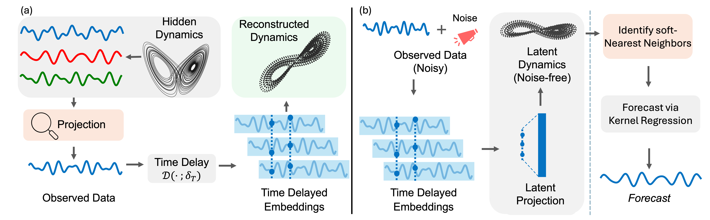

LETS Forecast: Learning Embedology for Time Series Forecasting ICML 2025
- Abrar Majeedi
- Viswanatha Reddy Gajjala
- Satya Sai Srinath Namburi GNVV
- Nada Magdi Elkordi
- Yin Li University of Wisconsin - Madison

Abstract
Real-world time series are often governed by complex nonlinear dynamics. Understanding these underlying dynamics is crucial for precise future prediction. While deep learning has achieved major success in time series forecasting, many existing approaches do not explicitly model the dynamics. To bridge this gap, we introduce DeepEDM, a framework that integrates nonlinear dynamical systems modeling with deep neural networks. Inspired by empirical dynamic modeling (EDM) and rooted in Takens' theorem, DeepEDM presents a novel deep model that learns a latent space from time-delayed embeddings, and employs kernel regression to approximate the underlying dynamics, while leveraging efficient implementation of softmax attention and allowing for accurate prediction of future time steps. To evaluate our method, we conduct comprehensive experiments on synthetic data of nonlinear dynamical systems as well as real-world time series across domains. Our results show that DeepEDM is robust to input noise, and outperforms state-of-the-art methods in forecasting accuracy.
Background
DeepEDM builds on the foundations of Takens’ Theorem and Empirical Dynamic Modeling (EDM). Takens’ Theorem guarantees that the state space of a deterministic dynamical system can be reconstructed from time-delayed embeddings of univariate observations, under certain smoothness and dimensionality conditions. EDM operationalizes this by forming a time-delay embedding of the observed signal and using local geometric methods, such as Simplex projection, to forecast future values. However, EDM methods method are sensitive to noise, model each time series independently, and are fundamentally limited to short-term forecasting.
Method
Our method extends EDM by incorporating a differentiable architecture that improves robustness, scalability, and forecasting performance. DeepEDM constructs time-delayed embeddings of the input sequence, as in classical EDM, and projects them into a learned latent space for improved noise tolerance. In this latent space, it applies kernel regression using efficient softmax attention to perform forecasting, followed by a learned decoder to reconstruct the output sequence.
This approach retains the foundational structure of EDM while removing key limitations: it supports longer forecasting horizons, learns a single model across sequences, and enables end-to-end optimization.